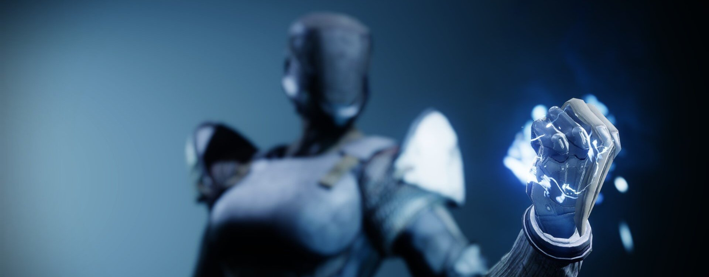
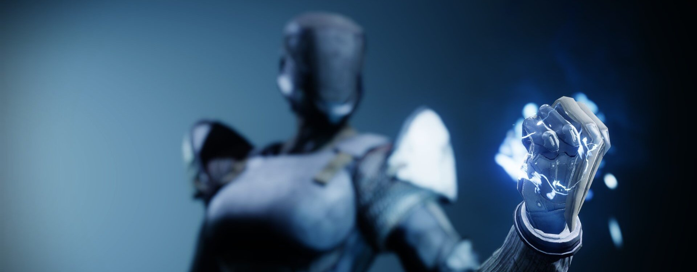

Le Titan
Les Titans sont des guerriers, héros et champions de la Lumière, qui se servent des dons du Voyageur pour faire la guerre aux Ténèbres. Confiants et résolus, les Titans ne reculent jamais devant l'adversité. Leur force brute est au service de la volonté du Voyageur
« Tu veux bien leur tirer dessus, s'il te plaît ?! »
Bien sûr, un Chasseur allait dire ce genre de chose. Comme si je n'avais pas d'alternative parfaitement viable.
Des rayons d'énergie explosaient tout autour de nous pendant notre petite dispute à couvert.
« Écoute, je vais nettoyer tout le secteur en moins de 20 secondes. »
« Laisse-moi deviner, lance le Chasseur, tes poings n'ont pas besoin d'être rechargés ? »
Tout le monde glousse. Il est temps de leur expliquer.
« L'espace dans lequel la balle se déplace est une faille de déconnexion qu'une simple arme à feu ne peut couvrir. Aucune puissance de feu n'est en mesure d'endosser la responsabilité de l'impact personnel. » Ils lèvent les yeux au ciel, mais je continue.p>
« Il n'y a aucune distance entre mon poing et ma cible, qui est captivée par un cadeau d'étincelles. C'est très personnel. Une dernière chance d'établir la connexion. »
Silence.
« Et donc, tu voudrais bien te connecter à la Ruche ? »
Très bien, fin de la discussion. Mes poings parleront pour moi.
Assaillants
Onde dévastatrice
Surchargez vos poings et frappez le sol avec la force d'un maelström. Frappez votre poing au sol et infligez des dégâts dans une zone autour de vous, déclenchant des répliques dans votre sillage.
Coup de tonnerre
Foncez dans les airs comme un missile et fracassez les cibles en leur infligeant des dégâts spectaculaires.
- Grenades